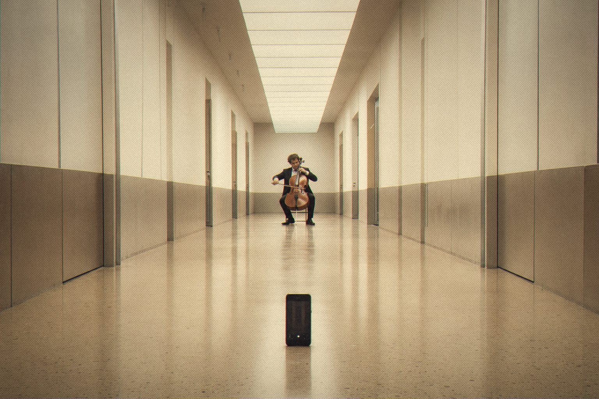

Press record from the other end of the house.

Every musician who records alone knows the walk: press record, run back to the instrument, catch your breath, miss the downbeat. Then do it all again.
Live Remote puts Ableton Live in your phone or tablet's browser, with Session and Arrangement views, the mixer, transport, and a big red REC button with input meters.
Run it on the computer and open an address on your phone over the same Wi-Fi. There's nothing to install on the phone.

Session view, on the desktop.
Live Remote
Control Ableton Live from any phone or tablet.
Open source · Desktop app
Jardim SonoroOpen-source audio research
Download: jardimsonoro.com/audioSource & issues: github.com/nagualcode/liveremote
Studio tools12